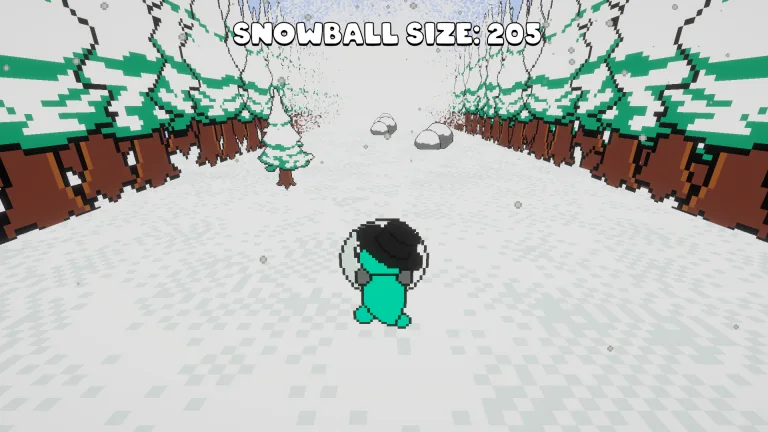

A tiny game with a clear audience.
Penguin Game is an infinite runner created by the Game Design Club for a children's holiday event. The project had a clear audience and a short development window, which made simplicity and readability especially important.


Building the gameplay loop.
I was responsible for programming the main gameplay loop. Other team members focused on graphics and character customization, making this a useful example of dividing responsibilities across a small team.
Gameplay loop
Customization
Designing for constraints.
The project demonstrated how a tight deadline can improve decision-making. With less time available, every feature had to support the intended experience rather than simply being interesting to build.